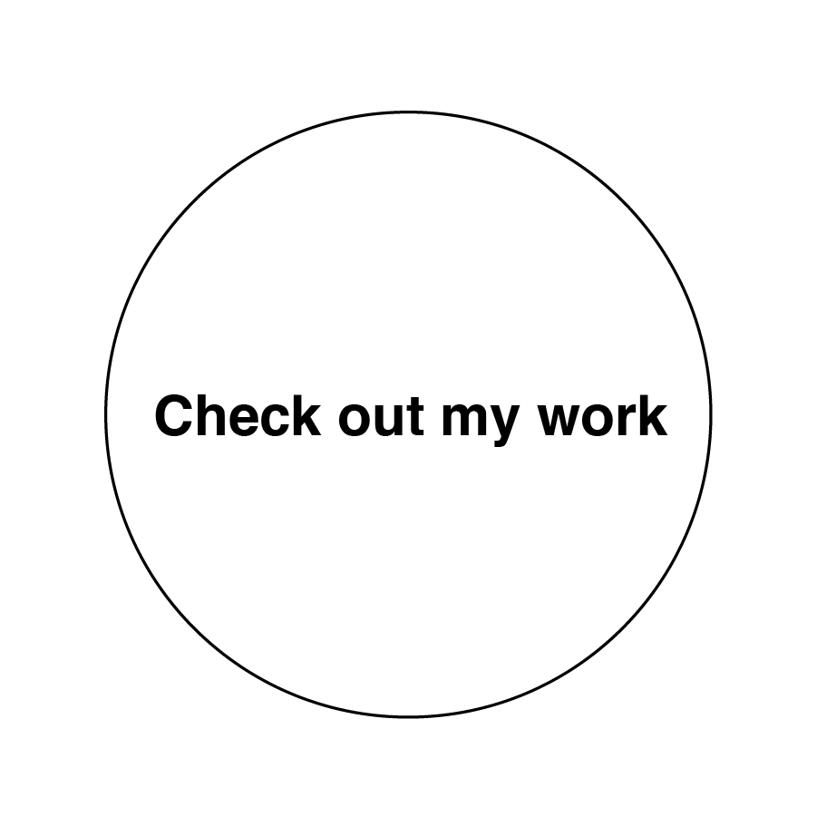

I like making things that look good and move well, in the physical world, on screens and everywhere in between.
I enjoy working across disciplines – layout, typography, technical systems, interaction design, UI and exploring how design can shape the world around us.
My goal is work that’s clear, polished and fun.
Skills
Illustrator, Figma, InDesign, Photoshop, AfterEffects
HTML, CSS, JavaScript, SQL
User research, Service design
Experience
- 2026 Freelance – Graphic designer
- 2026 ILT Education – Graphic designer
- 2026 ILT Education – Internship / thesis project
- 2025 Supermarket Art Fair – Volunteering
- 2025 Språkmuseet – Digital interaction in museum
- 2025 Huddinge kommun – Service design
Education
Södertörn University
Bachelor in media technology. IT, media and design. August 2023 – June 2026.
Stockholm University
Media and communication. August 2022 – June 2023.
Balettakademien Stockholm
Professional Dancers Education. August 2019 – May 2021.
